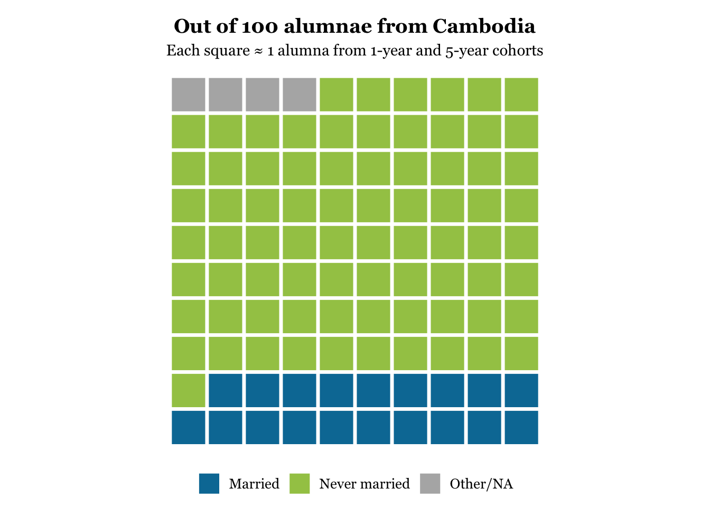

This snapshot highlights how alumnae from Cambodia navigate key life milestones such as education, marriage, and motherhood, surveyed one and five years after completing the program.
Married
19%
Post-Secondary Education
49%
Has Children
13%

Cambodia At a Glance: 2023
Metric
1 Year
5 Year
Number of Cambodia Alumnae Surveyed
39
38
Average Age
19.2
23.6
% Married
3%
37%
% Never married
97%
63%
Average Age at First Marriage
19
22.1
% Have Children
0%
24%
Average Number of Children
—
1.1
% That Have Pursued Post-Secondary Education
69%
37%
% That Have Completed Post-Secondary Education
0%
83%
Note: Due to cohort restrictions, it is not always possible to conduct Alumnae Survey monitoring on both 1-year and 5-year cohorts.
Cambodia At a Glance: 2024
Metric
1 Year
5 Year
Number of Cambodia Alumnae Surveyed
37
40
Average Age
19.1
23.8
% Married
3%
32%
% Never married
89%
60%
Average Age at First Marriage
19
21.8
% Have Children
0%
28%
Average Number of Children
—
1
% That Have Pursued Post-Secondary Education
65%
28%
% That Have Completed Post-Secondary Education
50%
65%
Note: Due to cohort restrictions, it is not always possible to conduct Alumnae Survey monitoring on both 1-year and 5-year cohorts.